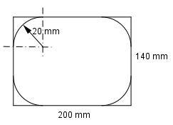

Aufgabe 139 Wie groß ist der Abfall in Prozent, wenn bei einem Rechteck (140 mm * 200 mm) die Ecken mit einem Radius von 20 mm abgerundet werden?

4 Viertelkreise ergeben einen Vollkreis. AVollkreis = r2 * π AVollkreis = 202 mm2 * π = 1 256 mm2 Aursprünglich = 200 mm * 140 mm = 28 000 mm2 AEcken = 4 * 20 mm * 20 mm = 1 600 mm2 Aabgerundet = Aursprünglich – AEcken + AVollkreis Aabgerundet = 28 000 mm2 - 1 600 mm2 + 1 256 mm2 = = 27 656 mm2 Abfall = 28 000 mm2 - 27 656 mm2 = 344 mm2 28 000 mm2 ---------- 100% 100 1 mm2 ----------- -------- % 28 000 100 * 344 344 mm2 ---------- ------------ = 1,23 % 28 000 Der Abfall beträgt 1,23%